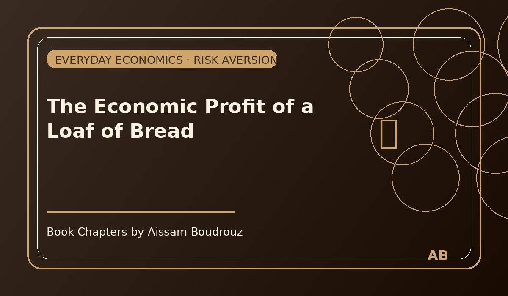

The Economic Profit of a Loaf of Bread
One sunny afternoon, I was walking home for lunch. It was one of those simple days — not good, not bad — just peacefully ordinary. The streets were quiet, and the air carried that faint smell of warm bread coming from the bakery nearby.
As I turned the corner, I passed by the small grocery shop next to my building. I slowed down a little, thinking of home, of lunch waiting on the table. Then a thought came to me — a small, annoying one:
"Wait… do we still have bread at home?"
I stopped for a second. No one was home to call and check. It was just me, the warm sunlight, and the big question: to buy or not to buy?
The bread dilemma
Now, this wasn't the first time it happened. Almost every day, I bought bread on my way back, and almost every day, I found some already sitting on the counter. Then by the next morning, we'd throw away the old ones because they had gone hard.
But skipping it wasn't always a good idea either. On the days I didn't buy any, I'd open the bread basket, find it empty, and have to go back out again — which I absolutely hate doing after getting comfortable at home.
So, there I was, standing in front of the store like a man facing a major life decision, holding an invisible calculator in my head.
That's when my inner economist woke up. You know that little voice — the rational one, the Homo Economicus we all carry inside, whispering about costs and benefits, even when it's about something as ordinary as a loaf of bread.
The quick calculation
I started imagining the possibilities:
If I buy the bread and there's already some at home, I'll waste two loaves and two coins. Not the end of the world, but still annoying. Bread from the shop can't really be kept — it hardens fast.
But if I don't buy it and there's none at home, I'll have to go back out later. That means losing time, walking again under the sun, and spending the same two coins anyway.
And let's be honest — I'm a little lazy. If I were already at home and realized there was no bread, I'd probably ask someone else to get it and give them a small tip. Let's say… five coins.
So the total loss in that case? Around seven coins.
My inner economist smiled. Option A (buy now): risk losing 2 coins. Option B (don't buy): risk losing 7. Even if both were equally likely, Option A clearly had the smaller risk. So I took a deep breath, nodded like someone who just solved a serious life equation, and stepped into the shop.
The invisible profit
When I got home and opened the bread basket, there it was — two fresh loaves sitting quietly, waiting for me.
I laughed to myself. "Well," I thought, "that's two coins gone… but at least I don't have to go back out."
Economically, that's called risk aversion — choosing the safer path with the smaller potential loss. But it's also something deeper: the quiet satisfaction of knowing you made the less annoying choice.
Some people think economics is only about money. But for me, that day, it was about peace of mind. The comfort of walking home without worrying, the calm of not second-guessing myself later.
That's what economists call economic profit — the invisible gain you get when your decision brings more satisfaction than its alternatives.
So yes, I lost two coins and ended up with too much bread. But I also bought certainty, calm, and an easy afternoon nap after lunch.
And honestly, that's the kind of profit I'll take any day. 🍞
← Back to Articles